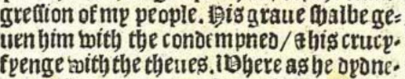
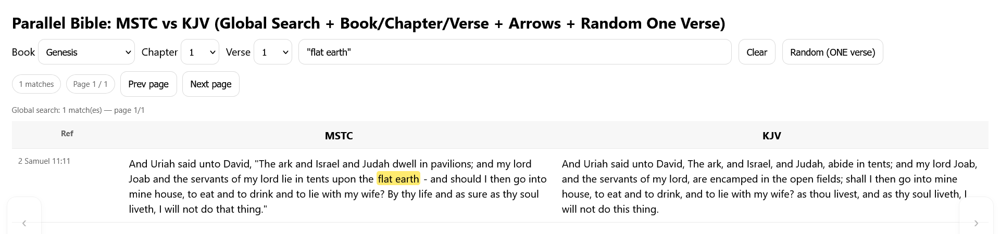
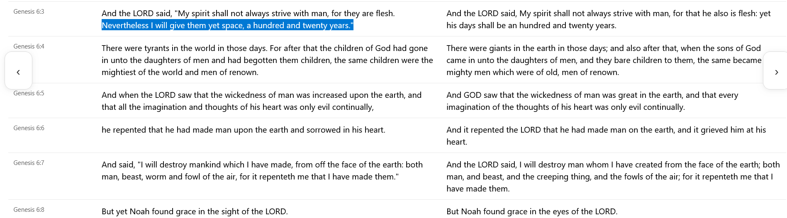

Jesus Christ is King of Kings!
Praise the Alpha and the Omega, my Saviour, Jesus Christ.
Here you will find the first ever English translation of the Word of God, which is known as the Matthew Bible.

In reading the original 1537 Bible, I found that it contains the word "crucyfyenge" (crucifying) in Isaiah 53. Isaiah 53 is a prophecy about Jesus Christ.

In the original English translation of the Word of God from 1537, "lucifer" appears in Isaiah 51. Every other Bible has removed or changed this, usually to "Rahab." Even the MSTC (Modern Spelling Tyndale-Coverdale) Bible which claims to be a "faithful translation" of the original Matthew 1537 Bible, has changed this verse and removed "lucifer." They used the word "Egypt" instead.

People of old knew the basic truth of where we live, and the true cosmology as ordained by our Heavenly Father.

This is the original text from 1537, spelled as "flatt erthe."
Seven shekels and ten silver pence is not the same as seventeen shekels.

In the original Matthew Bible, it reads "Seven sycles and ten sylver pens" (seven shekels, and ten silver pens)

I learned from an apocryphal work that the world was given 120 years by God to repent before the great flood. It was validating to see it here as well, in the original English translation.